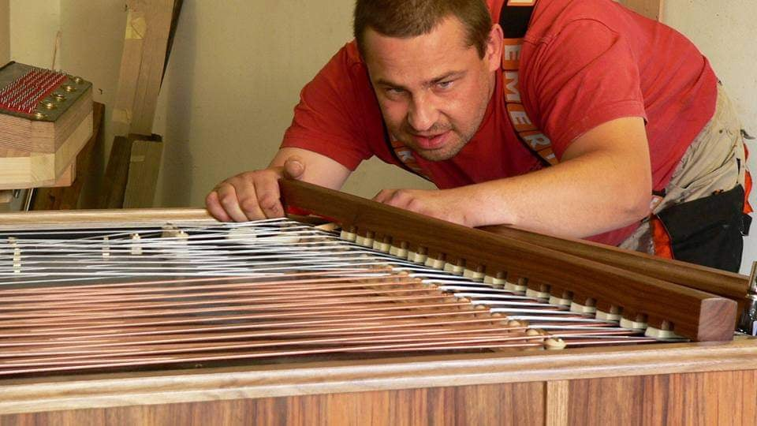

Historie značky Bohák 2
Rok 1900 - Vznik značky
Rok 1927 - Úspechy mezi válkami

Rok 1953 - Budapešťanské družstvo
Rok 1984 - Konec generácie

Lajos Bohák ml. umírá dne 7. 12. 1984 v Kerepesi u Budapešti. Po jeho smrti se objevují různí obchodníci, kteří by se rádi přiživili na slavném jméně. Skupují všemožně dostupné cimbály, dávají na ně insignie firmy a vydávají je za cimbály vyrobené u Boháka. Pochybná kvalita těchto cimbálů se brzy roznese a důveryhodnost značky je značně poničena. Zdá se, že její dny jsou definitivně sečteny.
Rok 2010 - Slavomír Hromada
Naštěstí na scénu vstupuje mladý Slavomír Hromada, který obdivoval cimbály značky Bohák už od svého dětství. Během studií cimbálu v Banské Bystrici ho napadlo, že by se pokusil cimbály Bohák zachránit a získat svolení pro jejich výrobu na Slovensku. S tlumočníky mnohokrát vyhledal a navštivil staré mistry, kteří pracovali v Bohákově dílně v Budapešti, aby se dozvěděl a naučil, v čem spočívala výroba, jaké fyzikální vlastnosti, tvary a způsoby upevnění součástek v těle cimbálu používali. Po úspěšných kvantometrických rozborech, pevnostních zkouškách a dlouhém legislativním procesu, získal od maďarské vlády svolení k tomu, aby používal na svých cimbálem značku Bohák.
Rok 2013 - Vznik společnosti Cimbalom Bohák

V roce 2013 vzniká spoločnosť Cimbalom BOHÁK s. r. o., ktorá sa zaoberá precíznou výrobou a predajom cimbalov zn. BOHÁK a ostatného vybavenia tohto typu zamerané pre konzervatória, základné umelecké školy (ZUŠ), folklórne súbory, známych alebo menej známych muzikantov. Společnost je oprávněna používat tradiční a svetoznámou maďarskou značku cimbalov BOHÁK a naďalej pokračuje v šírení dobrého mena a hudobných kvalít tohto výnimočného nástroja.
Výroba cimbálu v součastnosti
2019
Našim grom je inovovaná technológia pre dosiahnutie najvyšších kvalít zvukovej ale i estetickej stránky. Naši majstri dbajú na zachovanie kvality tejto dlhoročnej tradície, ktoré značku Bohák preslávili a urobili najobľúbenejšou značkou cimbalov po celom svete. Spolupracujeme s najlepšími umeleckými rezbármi, ktorí pre cimbaly Bohák vytvárajú prepracované rezby s pečaťou originality. Súčasne s tradíciou ide ruka v ruke aj pokrok, ktoré našim cimbalom dodávajú stále vyššiu kvalitu potrebnú pre moderného cimbalistu. Takmer všetky použité komponenty sú laboratórne testované a naše cimbaly sú vyrábané s osvedčeným certifikátom kvality. S postupným rozšiřováním výroby se společnost přejmenovává na Bohák Manufactury, s.r.o..